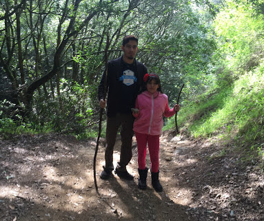

About Me

When watching one of my favorite shows, Game of Thrones, I stumbled upon a great motto from House Tyrell, "Growing Strong." I like this quote because it summarizes my view on life that, despite limitations or where we come from, we can grow strong and thrive. Instead of allowing my humble beginnings or obstacles drown me, I use them as determination to achieve my aspirations.
Growing up, I had no access to computers. Fortunately, I joined a national program that helps close the opportunity divide of young adults from obtaining careers technology. I’m now working in the security-compliance field and love what I do. This is allowing me to continue my professional and academic development. I’m passionate about building software and technology that improves humankind and the world.
I love volunteering, nature (especially forests), and spending time with family.
(In Progress)